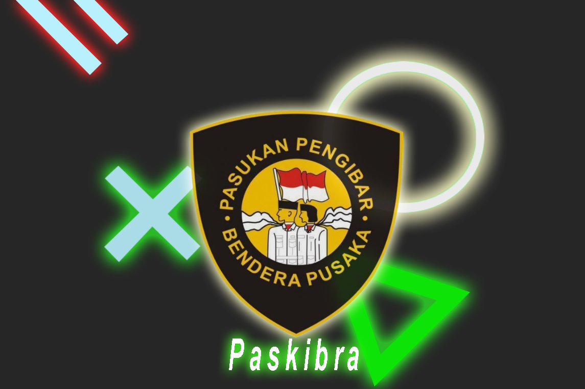
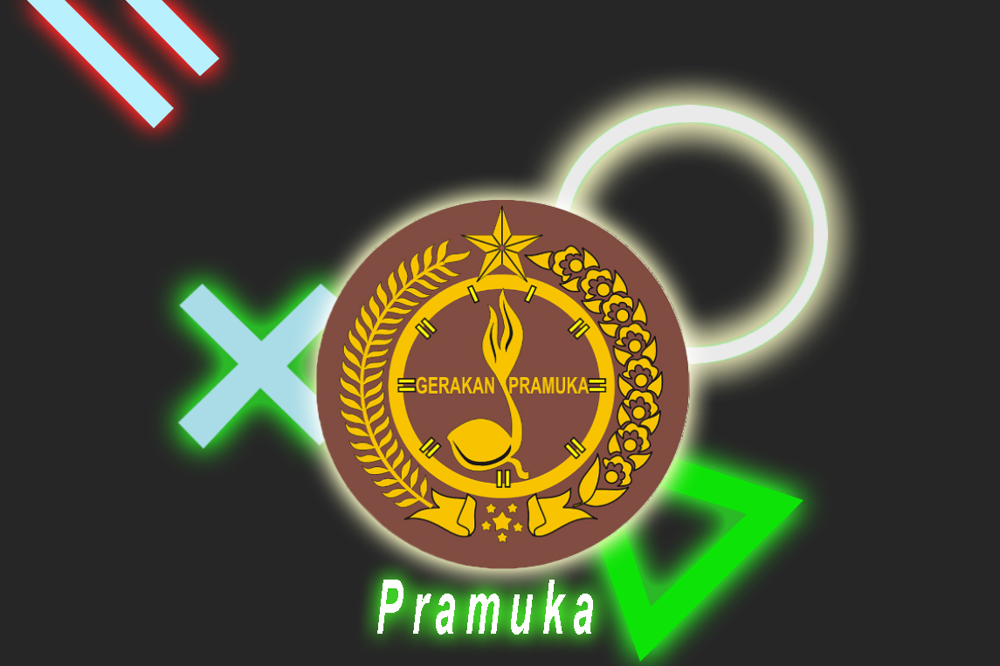

Paskibraka
Menjadi anggota sekaligus senior paskibraka yang mempunyai tanggung jawab di sekolah seperti mengajarkan pbb (Peraturan Baris-Berbaris) sekaligus bertanggung jawab berjalannya upacara Bendera Merah Putih setiap hari senin.

PRAMUKA
Menjadi Pengalang di dalam organisasi dan mendapatkan kepercayaan oleh pelatih pada tahun 2019, dan di tahun berikutnya dilantik menjadi Pengalang Ramu.